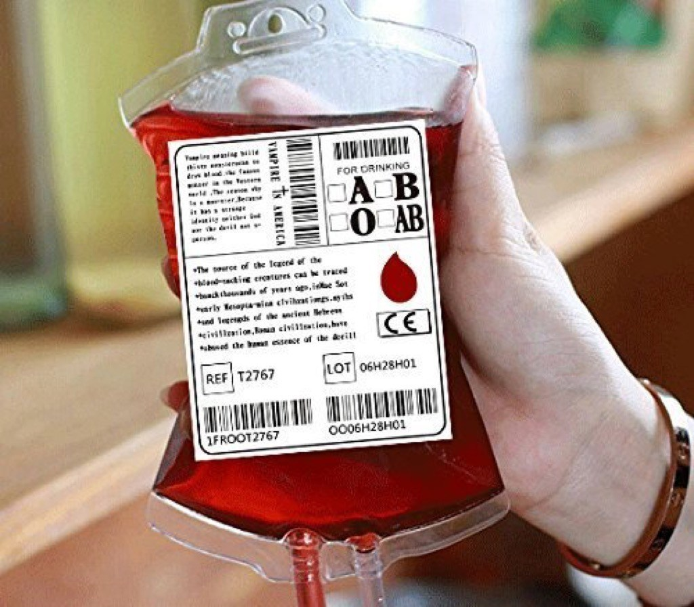

- Squirrels are behind most power outages in the U.S.
The American Public Power Association (APPA) says that squirrels are the most frequent cause of power outages in the U.S.
Typically, the squirrels cause problems by tunneling, chewing through electrical insulation, or becoming a current path between electrical conductors. "Frankly , the number one threat experienced to date by the U.S. electrical grid is squirrels
- Spider webs were used as bandages in ancient times.
In ancient Greece and Rome, doctors used spider webs to make bandages for their patients. Spider webs supposedly have natural antiseptic and anti-fungal properties, which can help keep wounds clean and prevent infection. It's also said that spider webs are rich in vitamin K, which helps promote clotting. So, next time you're out of Band-Aids, just head to your attic and grab some "webicillin."
- One quarter of all your bones are located in our feet

There are 26 bones in each foot. That's 52 bones in both feet, out of 206 total bones in your whole body, which is more than 25 percent. It may sound crazy at first, but think about it: Your feet support your weight and allow you to jump, run, and climb. Those bones and joints also allow your feet to absorb and release energy efficiently. It's one of the reasons humans can outrun any other animal in an endurance race.
- Blood donors in Sweden receive a text when their blood is used

To encourage more young people to donate blood, Sahlgrenska University Hospital in Gothenburg, Sweden, sends a text to donors when their blood has been dispensed to someone in need. A common issue with blood donation—along with other types of charitable donations—is that if a donor doesn't know the recipient, it's harder to convince them that donating is beneficial. But with this system, which started in 2012, potential donors in Sweden have proof that their contribution is going to good use. And for more quick trivia to kill some time,
- You're more likely to get a computer virus from visiting religious sites than porn sites.

According to research from security firm Symantec, religious websites carry three times more malware threats than pornography sites. Symantec found that the average number of security threats on religious sites was around 115, compared to adult content sites which carried around 25. In fact, only 2.4 percent of adult sites were infected with malware. The researchers hypothesized that's because porn sites need to generate a profit , so there's a financial incentive to keeping them virus-free to encourage repeat business.
-
Sunglasses were originally designed for Chinese judges to hide their facial expressions in court.

Today, sunglasses serve as protective eyewear, effectively preventing bright sunlight from causing discomfort or damage to our eyes. Of course, they're also a fashion accessory. But sunglasses were originally made out of smoky quartz in 12th century China, where they were used by judges to mask their emotions when they were questioning witnesses. And for more facts that are so cool they're hard to believe.